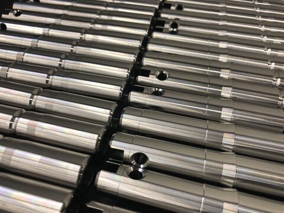

Axis Industrial für deico
Alle Komponenten mit echten Bildern und echten deutschen Texten aus dem Bestand der deico AG. Keine Platzhalter. Die Sprache ist bewusst hart: 4px Rahmen, 8px harte Schatten, keine Rundungen, sofortige Farbumkehr beim Hover.
Farben
Rund 90 Prozent neutral, rund 10 Prozent Akzent.Schriftskala
Space Grotesk für Fliesstext und Titel, JetBrains Mono für alle Zahlen, Kürzel und Beschriftungen.Präzision
Präzisionsmechanik aus einer Hand
Vom Einzelteil bis zur Serie
CNC 5-Achsen Fräsen mit Roboterautomation
Schwer zerspanbare Werkstoffe
Oberflächen messen und protokollieren
Eigener Lieferservice
Die deico AG ist ein kleiner aber feiner Dienstleister für Präzisionsmechanik mit Sitz im Zürcher Oberland. Wir drehen, fräsen und konstruieren nach Ihren Vorgaben. Eine unserer besonderen Stärken liegt in der Herstellung von komplexen und anspruchsvollen Bauteilen mit niedriger Stückzahl.
Über unsere Partnerbetriebe sind verschiedenste Oberflächenbeschichtungen möglich, bei Aluminium zum Beispiel Eloxieren, Hartanodisieren oder Hartematalieren.
15'000 rpm
Ø 340 mm · 635 × 535 × 460 mm · ≤ 1 µm · 2 + 2L/1000 µm
Buttons
Hover hebt das Element um 4px nach links oben, der Schatten wächst von 8px auf 12px. Ohne Übergang. Aktiv drückt es auf die Grundebene zurück. Mit Tab durchsteppen, um focus-visible zu prüfen.Navigation
Die Leiste oben ist die echte Navigation. Unter 768px klappt sie hinter den Menü-Knopf. Ohne JavaScript bleibt sie sichtbar und vollständig bedienbar.Vollbreite Bildbahn
16:9 fixiert, 4px Rahmen oben und unten, Bildunterschrift als Vollton-Block. Kein Verlauf, kein Weichzeichner.
Maschinen im Raster
Foto im 4:3-Raster, Name, dann Spezifikation in Mono. Echte Werte aus dem Maschinenpark.-
 Fräsen CNC 5-Achsen
Fräsen CNC 5-AchsenAwea FCV-620
- Verfahrwege
- 635 × 535 × 460 mm
- Aufspannfläche
- Ø 500 / 650 mm
- Werkzeugwechsler
- 60-fach
- Spindel
- 15'000 rpm
- Steuerung
- Heidenhain iTNC530
-
 Drehen CNC mit Automation
Drehen CNC mit AutomationNakamura-Tome AS200LMYS
- Drehdurchmesser
- max. 340 mm
- Stangendurchlass
- 65 mm
- Spitzenweite
- 800 mm
- Werkzeugplätze
- 12 / 24
- Steuerung
- Fanuc Oi-TF
-
 Drehen CNC
Drehen CNCXYZ Proturn 350
- Über Schlitten
- 190 mm
- Über Bett
- 350 mm
- Stangendurchlass
- 53 mm
- Spitzenweite
- 1000 mm


Technische Kennzahlen
Zwölfspaltiges Raster, Kacheln unterschiedlicher Breite. Zahlen immer in Mono, tabellarisch.ab 1
Vom Prototyp über Ersatzteile nach Muster bis zur automatisierten Serie.
≤ 1 µm
Messplatz mit Höhenmessgerät, Fehlergrenze 2 + 2L/1000 µm.
635
× 535 × 460 mm, Awea FCV-620
Ø 340
mm, Nakamura-Tome AS200LMYS
9
Fräsen, Drehen, Schleifen, Sägen, Messtechnik
Stahl · Aluminium · Messing · Kunststoff · Nickelbasislegierungen (Hastelloy, Inconel) · Titanlegierungen
Dasselbe Foto, vier Behandlungen
Entsättigt im Ruhezustand, springt beim Hover ohne Übergang auf volle Farbe. Auf Touchgeräten ist das Bild von Anfang an farbig, weil es dort kein Hover gibt.

Kontaktblock
Echte Adressdaten aus dem Bestand. Liefer- und Rechnungsadresse unterscheiden sich.- Rechnungsadresse
- deico AG
Huebstrasse 24
CH-8636 Wald
- Lieferadresse und Werkstatt
- deico AG
Huebstrasse 25
CH-8636 Wald
- MWST-Nummer
- CHE-432.738.804 MWST
- Telefon (Deutsch, Englisch)
- +41 55 535 55 50
- mail@deico.ch
- Ansprechpartner
- Daniel Eicher, Dipl. Ing. FH, Geschäftsführer
Matthias Eicher, Dipl. Ing. FH, stv. Geschäftsführer